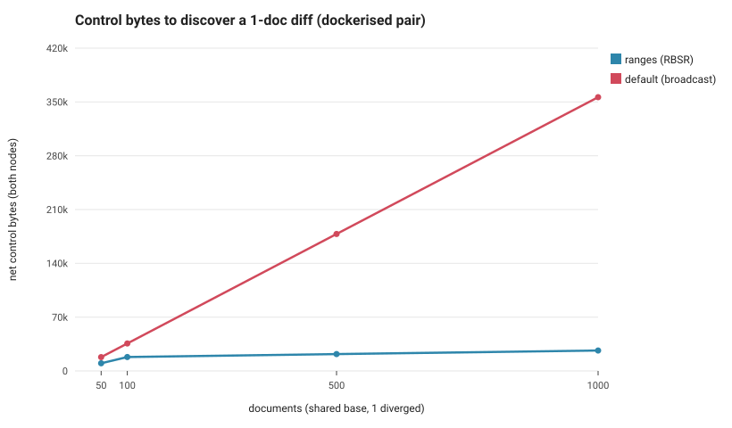
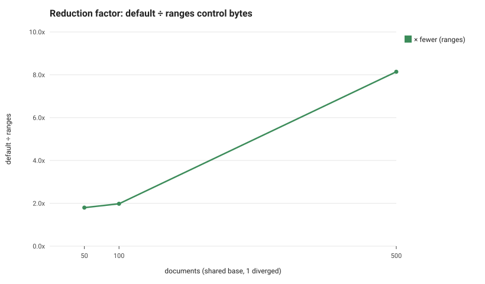

Two benchnode containers on one host, large shared base with one diverged document. Net control bytes = sum of both nodes' sent+received over the measured window.


| docs | ranges bytes | default bytes | reduction | converged | stateMatch |
|---|---|---|---|---|---|
| 50 | 10008 | 17984 | 1.80x | True | True |
| 100 | 18085 | 35784 | 1.98x | True | True |
| 500 | 21889 | 178190 | 8.14x | True | True |